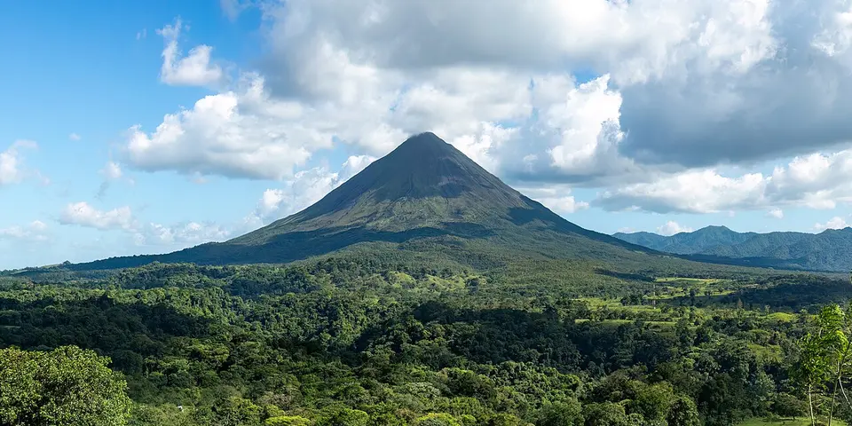

Central America & Caribbean
Costa Rica on a budget
Sloths, toucans and rainforest everywhere, plus volcanoes and two coasts. It's the priciest country in Central America, so hostels and local sodas matter.
Photo: Rhododendrites, CC BY-SA 4.0, via Wikimedia Commons
_(cropped).jpg){kind=link}
Classic route
San José, La Fortuna, Monteverde, then Manuel Antonio or the Caribbean coast. 2 weeks.
Before you go
Flights to La Fortuna: Skyscanner · Kiwi.com · Google Flights
Hostels and guesthouses in La Fortuna · Monteverde · Manuel Antonio · Puerto Viejo
Tours and tickets: La Fortuna · Monteverde
Mobile data: Costa Rica eSIM
Travel insurance: SafetyWing
How much 17 places in Costa Rica cost
Daily budgets per person in US dollars: a hostel dorm or simple guesthouse, local food, local transport and the usual entry fees.
-
La Fortuna
Arenal Volcano's near-perfect cone, hanging bridges through the rainforest canopy and free hot river pools where locals soak after dark.
Bed $22 · Food $16 · Getting around $6 · Extras $20
Budget tip: Soak in the free hot river near Tabacón instead of paying for resort springs. Casados at local sodas are cheap, filling meals.
$64per day -
Monteverde
Misty cloud forest reserves, resplendent quetzals, hummingbirds and night walks in search of tarantulas, frogs and sleeping sloths.
Bed $22 · Food $16 · Getting around $6 · Extras $25
Budget tip: Night tours are often the best wildlife value. Take the public bus up the mountain instead of a private shuttle.
$69per day -
Manuel Antonio
Sloths in the treetops, capuchin monkeys raiding beach bags and white-sand coves inside a small national park on the Pacific coast.
Bed $24 · Food $16 · Getting around $4 · Extras $20
Budget tip: Buy park tickets online in advance; the park is closed on Tuesdays. Stay in Quepos, where hostels and sodas are cheaper.
$64per day -
Puerto Viejo
Laid-back Caribbean beaches, reggae bars, sloths in the trees and the coastal trail through Cahuita National Park.
Bed $20 · Food $15 · Getting around $4 · Extras $6
Budget tip: Cahuita National Park entry is by donation at the Kelly Creek gate. Rent a beach cruiser bike to ride out to Punta Uva.
$45per day -
Santa Teresa
A surf village on the Nicoya Peninsula with long, empty beaches, easy beginner waves and blazing sunsets over the Pacific.
Bed $28 · Food $17 · Getting around $8 · Extras $8
Budget tip: Restaurants are pricey, so cook in your hostel kitchen. A weekly board rental costs much less than paying by the day.
$61per day -
Cahuita
Caribbean village beside Cahuita National Park, with sloths, howler monkeys and reef snorkeling along a coastal trail.
Bed $18 · Food $14 · Getting around $4 · Extras $5
Budget tip: The park entrance in town works on a donation basis; bring your own snorkel gear to save on rentals.
$41per day -
San José
Capital with the Pre-Columbian Gold Museum, National Theatre and Mercado Central sodas serving casados and gallo pinto.
Bed $20 · Food $14 · Getting around $3 · Extras $6
Budget tip: Eat at Mercado Central sodas for cheap set lunches; use the city as a base for buses rather than staying long.
$43per day -
Montezuma
Laid-back Nicoya Peninsula village with jungle waterfalls, rocky beaches and access to Cabo Blanco nature reserve.
Bed $22 · Food $15 · Getting around $5 · Extras $6
Budget tip: Hike to the waterfalls yourself instead of paying for tours, and catch the ferry from Puntarenas to Paquera to save time.
$48per day -
Uvita
Whale's Tail sandbar at Marino Ballena National Park, with humpback whale watching season and nearby jungle waterfalls.
Bed $22 · Food $15 · Getting around $4 · Extras $10
Budget tip: Check low tide times to walk out on the sandbar; waterfall entry fees are small compared to tours.
$51per day -
San Gerardo de Dota
Cloud forest valley known for resplendent quetzal sightings, trout fishing and cool mountain trails above 2,000 m.
Bed $25 · Food $16 · Getting around $6 · Extras $10
Budget tip: Guesthouses can arrange quetzal walks; take a bus to the highway turnoff and ask your lodge for a pickup.
$57per day -
Tamarindo
Busy Guanacaste surf town with beginner waves, sunset sailing trips and turtle nesting nearby at Playa Grande.
Bed $26 · Food $17 · Getting around $5 · Extras $10
Budget tip: Surf schools near the main beach compete on price; walk along the beach to cheaper sodas away from the main strip.
$58per day -
Río Celeste
A milky sky-blue river and waterfall hidden in the rainforest of Tenorio Volcano National Park, reached on a muddy jungle hike.
Bed $22 · Food $15 · Getting around $8 · Extras $15
Budget tip: Stay in Bijagua and be at the gate at opening, before the tour vans arrive. Swimming in the river is not allowed.
$60per day -
Rincón de la Vieja
Volcanic national park with bubbling mud pots, fumaroles, hot springs and waterfall hikes near Liberia.
Bed $22 · Food $15 · Getting around $8 · Extras $20
Budget tip: Stay in Liberia and take a morning shuttle, or camp near the park; book hot springs separately to avoid packaged tours.
$65per day -
Turrialba
Base for whitewater rafting on the Pacuare River and visits to Guayabo National Monument, the country's main archaeological site.
Bed $20 · Food $14 · Getting around $4 · Extras $30
Budget tip: Book rafting trips locally rather than from San José; Guayabo's fee is low and the site is reachable by local bus.
$68per day -
Tortuguero
A car-free village between jungle canals and a black-sand beach where green turtles nest from July to October.
Bed $22 · Food $16 · Getting around $22 · Extras $15
Budget tip: Skip the packages: take the bus to La Pavona, then the public boat. Night turtle walks must be with a certified guide.
$75per day -
Cerro Chirripó
Hike to Costa Rica's highest peak for views of both oceans on a clear morning, sleeping at a base lodge at 3,400 m.
Bed $22 · Food $14 · Getting around $6 · Extras $40
Budget tip: Permits and lodge beds sell out months ahead, so book early. Sleep in San Gerardo de Rivas the night before the climb.
$82per day -
Osa Peninsula
Corcovado, 'the most biologically intense place on Earth', with tapirs, scarlet macaws and all four of Costa Rica's monkey species.
Bed $28 · Food $17 · Getting around $9 · Extras $30
Budget tip: A licensed guide is required in Corcovado. Base yourself in Puerto Jiménez or Drake Bay and split guide costs with other travelers.
$84per day
Know before you go
Costa Rica on a budget: the basics
Currency
$1 = 459 CRC
Costa Rican colón
| Dollars to CRC | CRC to dollars | ||
|---|---|---|---|
| $1 | 459 CRC | 100 CRC | $0.218 |
| $5 | 2,295 CRC | 500 CRC | $1.09 |
| $10 | 4,589 CRC | 1,000 CRC | $2.18 |
| $20 | 9,179 CRC | 5,000 CRC | $10.89 |
| $50 | 22,947 CRC | 10,000 CRC | $21.79 |
| $100 | 45,895 CRC | 50,000 CRC | $109 |
A typical day here (about $64) is roughly 29,000 CRC.
Mid-market rate on 2026-10-05. Cash machines and exchange desks pay a little less.
Getting around
Public buses are cheap but slow, while tourist shuttles between San José, La Fortuna and Monteverde cost much more but save time. Uber and DiDi work in the Central Valley and some beach towns. Book shuttles a day or two ahead in the December to April dry season.
Where to sleep
Hostel dorms and cheap cabinas (simple rooms) are found in every tourist town, and beds near Manuel Antonio go fast in high season.
What to eat
- Casado: rice, beans, salad, plantain and a choice of meat
- Gallo pinto: rice and black beans fried together for breakfast
- Chifrijo: bowl of rice, beans, fried pork and pico de gallo
- Olla de carne: hearty beef soup with root vegetables and corn
Money
Cards are widely accepted, and US dollars are used alongside colones in tourist areas. Restaurant bills already include a 10% service charge, so extra tipping is optional.
Phone data
Kölbi has the widest coverage, and SIMs are easy to buy with a passport, though signal fades in deep cloud forest and remote beaches.
Heads up
Never leave bags in a parked car at beaches or trailheads, where break-ins are common.
Costa Rica travel: quick answers
How much does a day in Costa Rica cost on a budget?
About $64 a day for one person, from $41 in Cahuita to $84 in Osa Peninsula. That covers a hostel dorm or simple guesthouse, local food, local transport and the usual entry fees, so a week runs about $448 before flights.
When is the best time to visit Costa Rica?
December to April is the best time, with the most reliable weather for getting around.
What is the cheapest place to visit in Costa Rica?
Cahuita, at about $41 a day. Caribbean village beside Cahuita National Park, with sloths, howler monkeys and reef snorkeling along a coastal trail.
How long do you need in Costa Rica?
San José, La Fortuna, Monteverde, then Manuel Antonio or the Caribbean coast. 2 weeks.
How much is $1 in Costa Rica?
One US dollar is about 459 Costa Rican colón (CRC), going by the mid-market rate on 2026-10-05. So $20 is roughly 9,179 CRC, and a typical budget day of $64 comes to about 29,000 CRC.
How do you get around Costa Rica cheaply?
Public buses are cheap but slow, while tourist shuttles between San José, La Fortuna and Monteverde cost much more but save time. Uber and DiDi work in the Central Valley and some beach towns. Book shuttles a day or two ahead in the December to April dry season.
What food should you try in Costa Rica?
Casado, rice, beans, salad, plantain and a choice of meat. Gallo pinto, rice and black beans fried together for breakfast. Chifrijo, bowl of rice, beans, fried pork and pico de gallo. Olla de carne, hearty beef soup with root vegetables and corn.
Planning around the seasons? See where to go in December, or compare the cheapest countries nearby.
Itineraries through Costa Rica
- Copan to Costa Rica 24 days · $1,862
- Costa Rica Volcanoes and Beaches 15 days · $1,567
Similar budgets nearby
- Belize $64/day
- Jamaica $59/day
- Trinidad and Tobago $55/day
- Honduras $49/day